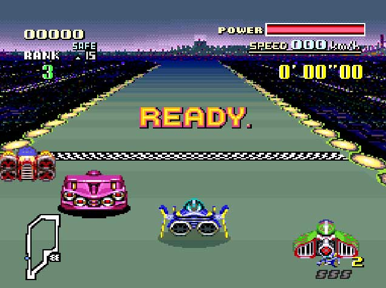
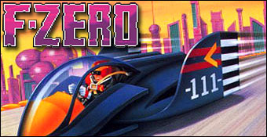
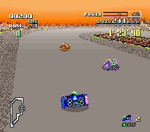

F-Zero
F-Zero est l'un des premiers jeux sorti sur Super Nintendo, il est confié à des gens très talentueux : Miyamoto, Kazunobu Shimizu (responsable du design de Zelda 2 sur NES), Yasunari Nishida (ancien programmateur principal des deux premiers Zelda et de Super Mario Bros). La course d'hovercraft qu'ils réalisent est directement née de la recherche en matière de trois dimensions. Ce jeu s'annonce comme une formidable vitrine technologie pour la 16-bits de Nintendo. Il faut choisir entre 4 véhicules très différents, chacun ayant son propre pilote (le Capitaine Falcon, l'élégant Docteur Stewart, Pico l'extraterrestre agressif ou encore Samouraï Goroh).
Lien des articles :
- Gros pixels
- Wikipédia
- Youtube


